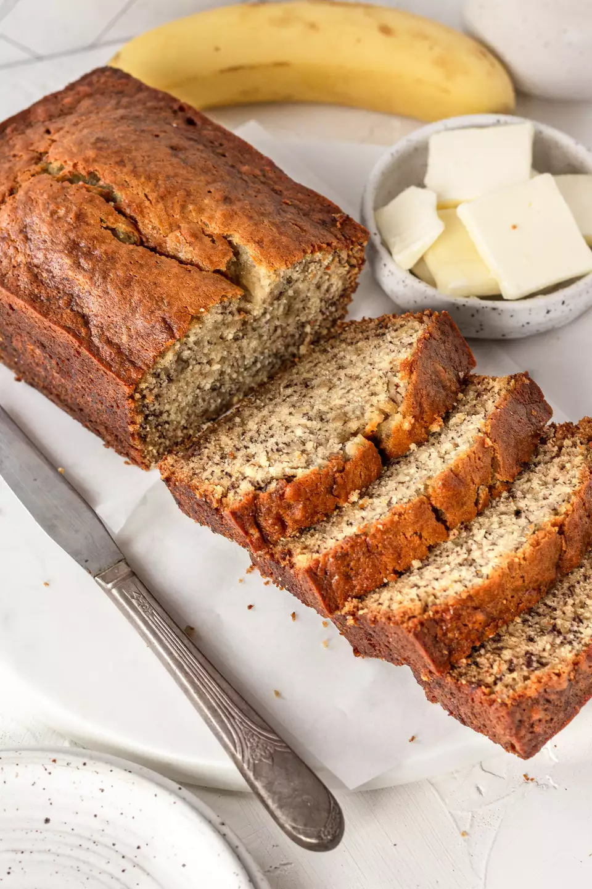

Bannana Bread

Ingredients
- 2 to 3 medium (7" to 7-7/8" long) very ripe bananas, peeled (about 1 1/4 to 1 1/2 cups mashed)
- 1/3 cup butter, unsalted or salted, melted
- 1/2 teaspoon baking soda
- 1 pinch salt
- 3/4 cup sugar (1/2 cup if you would like it less sweet, 1 cup if more sweet)
- 1 large egg, beaten
- 1 teaspoon vanilla extract
- 1 1/2 cups all purpose flour